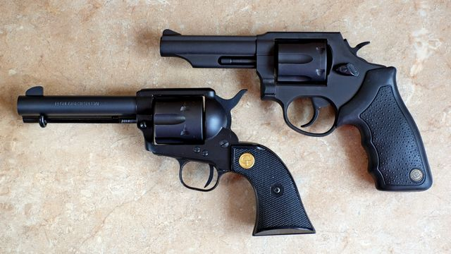
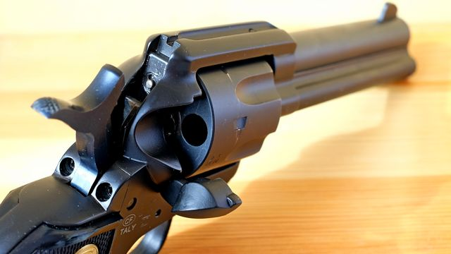
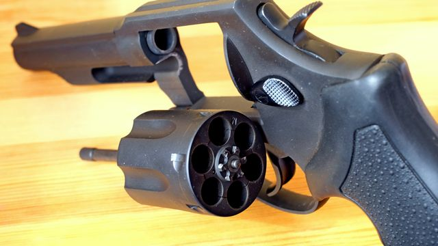
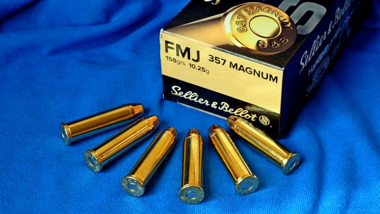
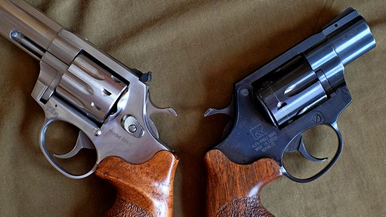
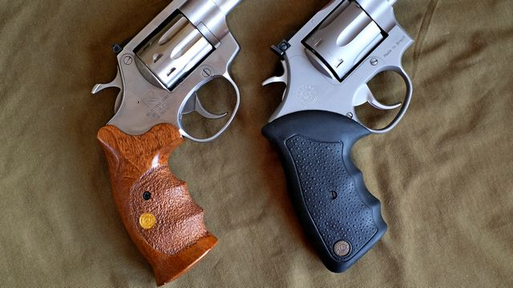

Od zera do rewolwera
O broni palnej i strzelectwie – po ludzku i bez zadęcia
Pozwolenie na broń krok po kroku
Twój pierwszy rewolwer
10 kwietnia 2021
tekst i zdjęcia: Mikołaj Bartnicki
Czeski rewolwer Alfa Steel 3520 .357 Magnum
W tekście Twój pierwszy pistolet odradzam wybór rewolweru jako pierwszej broni. Co do zasady podtrzymuję tę opinię. Jeśli jednak od początku marzyłeś o bębnowym sześciostrzałowcu, to nie oglądaj się na nic, tylko kup rewolwer, strzelaj i bądź szczęśliwy.
Przede wszystkim nowy
Podobnie jak w przypadku pistoletów, jeśli kupujesz pierwszy rewolwer to radzę skupić się na nowych egzemplarzach ze sklepu. O używanych pomyślisz gdy już okrzepniesz nieco w rewolwerowym półświatku. Ten artykuł dotyczy wyłącznie rewolwerów nowych.
Opisałem już najważniejsze marki rewolwerów. Zachęcam cię do zapoznania się z tym zestawieniem, abyś nabrał podstawowej orientacji w realiach rynku. Wybór nie jest zbyt duży, niemniej jednak parę decyzji będziesz musiał podjąć.
Tradycja kontra nowoczesność
Istnieją dwa główne typy rewolwerów: tradycyjny ze spustem pojedynczego działania (ang. single action), oraz współczesny z samonapinaniem kurka (ang. double action). W swoim podstawowym znaczeniu oba te terminy określają tryb pracy spustu, ale funkcjonują one także jako określenie rodzaju konstrukcji rewolweru. Obydwa typy łatwo rozpoznać na pierwszy rzut oka, bo istotnie różnią się one kształtem, zwłaszcza w obrębie kurka i rękojeści.
Rewolwer typu single action (po lewej) obok rewolweru o współczesnej konstrukcji
Rewolwer single action
Ten pierwszy typ to konstrukcja z XIX wieku, pamiętająca Dziki Zachód. Posiada spust pojedynczego działania (single action), co oznacza, ze przed każdym strzałem trzeba ręcznie napiąć kurek. Bęben w takim rewolwerze nie jest otwierany. Naboje ładuje się po otwarciu małej klapki (bramy) z tyłu broni; w ten sam sposób opróżnia się bęben z łusek. Znaczna większość rewolwerów tego typu ma nieregulowane przyrządy celownicze: stałą muszkę oraz wydrążony wzdłuż szkieletu rowek pełniący rolę szczerbinki.
Otwarta brama ładowania bębna rewolweru typu single action
Obecnie rewolwery single action są rzadko produkowane i w ofercie sklepów nie znajdziesz ich zbyt wielu, ale nie ma czego żałować. Ich ergonomia jest taka sobie: rękojeść niewygodna ze względu na swój archaiczny kształt, przyrządy celownicze zwykle zgrane losowo, a ładowanie nabojów i usuwanie łusek - upierdliwe. Do tego dochodzi konieczność konieczność demontażu bębna do czyszczenia broni. Dupy nie urywa.
Zakup rewolweru typu single action ma sens jeśli posiadasz już konia, kapelusz i planujesz zostać kowbojem. W pozostałych przypadkach nie jest to najlepszy wybór.
Rewolwer double action
Natomiast double action to współczesna konstrukcja, według której produkuje się wszystkie dzisiejsze rewolwery. Od opisanej wyżej konstrukcji single action różni się ona na pierwszy rzut oka bębnem otwieranym w lewo na wychylnym ramieniu, co pozwala na jego szybkie i wygodne ładowanie. Ogólny kształt broni jest też nieco inny, zaś współczesna rękojeść jest znacznie wygodniejsza.
Otwarty bęben rewolweru Taurus 65
W takim współczesnym rewolwerze, spust może pracować w tradycyjnym trybie pojedynczego działania, wymagającym ręcznego napięcia kurka przed strzałem, lub w trybie samonapinania (podwójnego działania – double action), w którym samo naciśnięcie spustu napina kurek i obraca bęben, po czym zwalnia kurek powodując strzał. Rewolwery tego typu na ogół mają regulowane przyrządy celownicze, choć jeśli dobrze poszukasz to znajdziesz także modele z przyrządami stałymi.
Niektórzy (na przykład firma Smith & Wesson) silą się na hiperpoprawność nazywając rewolwery o współczesnej konstrukcji terminem "single/double action". Ale ja (podobnie jak firma Ruger) wolę prostsze określenie "double action".
Jeśli nie wiesz, który rodzaj rewolweru wybrać, to wybierz współczesny typ double action; innych zresztą nie spotkasz zbyt często w sklepach.
Rewolwer bezkurkowy
Uważaj, żeby nie kupić przypadkiem bezkurkowego rewolweru double action only. Strzelanie z takiego rewolweru jest bardzo trudne, gdyż nie da się napiąć kurka przed strzałem. Jak sama nazwa wskazuje, można z niego strzelać tylko w trybie samonapinania kurka, co wymaga sporo wprawy.
Ten typ rewolweru poznasz łatwo po braku widocznego kurka, gdyż jest on umieszczony w całości wewnątrz szkieletu. Wynika z tego, że nazwa bezkurkowy
jest dość umowna, bo rewolwer faktycznie ma kurek, choć niedostępny dla użytkownika. W polskich sklepach rewolwery tego typu występują równie często co tradycyjne modele single action, czyli prawie nigdy.

Bezkurkowy rewolwer typu double action only: Kimber K6s .357 Magnum
Jaki kaliber?
Rewolwery mają swój własny rodzaj amunicji, inny niż amunicja pistoletowa. Na pierwszy rewolwer wybierz model strzelający amunicją .357 Magnum. Jest to popularny nabój rewolwerowy, względnie łatwo dostępny i bardzo silny. Amunicja .357 Magnum ma energię znacznie większą niż jakakolwiek popularna amunicja pistoletowa, więc wrażenia godne służby w artylerii masz zapewnione.
Pełna nazwa, której nikt nie używa, brzmi: .357 Smith & Wesson Magnum. Natomiast w mowie potocznej funkcjonuje wyłącznie skrócona forma: .357 Magnum.
Naboje .357 Magnum nie kosztują aż tak wiele jak amunicja rewolwerowa cięższych kalibrów. Stanowią świetny kompromis pomiędzy energią strzału a ceną: już Magnum, a jeszcze nie bankructwo.
Rewolwerowa amunicja .357 Magnum
Odradzam pozostałe kalibry, szczególnie te cięższe. Słynny kaliber .44 Magnum kusi, bo każdy chce być jak Dirty Harry, ale odrzut tej amunicji jest dla większości ludzi na granicy przyjemności ze strzelania lub o krok za nią. Jeśli koniecznie musisz mieć rewolwer .44 Magnum lub większy, to zaplanuj go jako któryś z następnych zakupów, albo przynajmniej postrzelaj najpierw z wypożyczonego egzemplarza.
.357 Magnum / .38 Special
Cechą rewolwerów .357 Magnum jest możliwość strzelania również słabszą i tańszą amunicją .38 Special. Nabój .38 Special jest krótszy niż .357 Magnum, ale ma identyczną średnicę, więc można go załadować do komory bębna .357 Magnum i wystrzelić – nie ma żadnych technicznych przeszkód.
Fakt ten jest bezmyślne przytaczany jako kluczowa zaleta rewolwerów .357 Magnum: trening amunicją .38 Special ma być łagodniejszy dla nadgarstków oraz portfela. W teorii to prawda, lecz praktyka jest złożona i wcale nie taka atrakcyjna. Choć temat ten jest ciekawy, to wykracza on poza zakres niniejszego tekstu, wiec poświęcę mu w przyszłości oddzielny artykuł. Natomiast w tej chwili możesz spokojnie przyjąć, że każdy rewolwer .357 Magnum jest też rewolwerem .38 Special, bez wnikania w techniczne szczegóły.
Biorąc powyższe pod uwagę, nalegaj aby w fakturze zakupu twojego rewolweru sprzedawca wpisał oba kalibry, zarówno .357 Magnum jak i .38 Special. Dzięki czemu taki sam wpis pojawi się w twojej legitymacji, co pozwoli ci na zakup amunicji obu rodzajów.
Lufa długa czy lufa krótka?
Kolejnym kryterium wyboru konkretnego modelu jest długość lufy, bo te bywają skrajnie różne. Długości rewolwerowych luf tradycyjnie wyraża się w calach. Najczęściej spotykane są rewolwery z lufami o długościach 6, 4 oraz 2 cali. Istnieją także lufy rewolwerowe o innych długościach, ale najpopularniejsze są właśnie te trzy wymienione.

Rewolwery Kimber K6s z lufą 2-calową oraz Ruger GP100 z lufami o długości 4 i 6 cali
6 cali
Rewolwery sześciocalowe lubię najbardziej, więc od takiego właśnie radzę ci zacząć poszukiwania. Długa lufa pozwala w pełni wykorzystać potencjał energetyczny naboju, zaś duża odległość między muszką a szczerbinką zwiększa precyzję celowania. Brzmi nieźle? Ma to jednak swoją cenę.
Rewolwery przez swoją budowę są wyważone gorzej niż pistolety: więcej masy jest rozłożone z przodu, przez co rewolwer mocniej niż pistolet ciąży na lufę, tym bardziej jeśli jest ona długa. Ta charakterystyka sprawia, że wielu strzelców ma kłopoty ze stabilnym chwytem długolufowych rewolwerów, co utrudnia celne strzelanie.
4 cale
Wady tej nie mają rewolwery czterocalowe. Skrócenie lufy o te pięć centymetrów znacznie poprawia wyważenie broni. Może się okazać, że z rewolweru czterocalowego uzyskujesz lepsze wyniki niż z sześciocalowego, właśnie z powodu lepszego wyważenia, dzięki któremu łatwiej utrzymać stabilny chwyt.
Co prawda skrócenie dystansu między muszką a szczerbinką teoretycznie pogarsza precyzję celowania, ale na poziomie amatorskiego strzelania różnica ta jest pomijalna. Zmniejszenie prędkości wylotowej pocisku również jest nieistotne w kontekście dziurawienia papierowej tarczy. Jeśli utrzymanie ciężaru sześciocalowego rewolweru sprawia ci kłopot, to spokojnie bierz rewolwer czterocalowy i niczym się nie przejmuj.
2 cale
Ostatnią kategorię stanowią rewolwery o lufach 2-calowych. To dość ekstremalne konstrukcje powstałe głównie jako broń do ochrony osobistej. Z tego powodu zwykle mają też zmniejszone rękojeści, aby ułatwić ich skryte noszenie. Strzelanie z takiego malutkiego rewolweru nie jest najłatwiejsze. Ciężko o wygodny i pewny chwyt, niska masa przekłada się na silny odrzut, a krótki dystans między (często szczątkowymi) przyrządami celowniczymi zdecydowanie nie pomaga.
Rewolwery o takich ekstremalnie krótkich lufach potocznie określane są angielskim słowem snubnosed
co w wolnym tłumaczeniu oznacza utarty nos
.
Mimo że taki krótki rewolwer został pomyślany jako broń do strzelania w oddalony o kilka metrów cel wielkości człowieka, to przy pewnej wprawie da się z niego celnie trafiać w sportową tarczę na dystansie 25 m. Często usłyszysz o niższej celności krótkich rewolwerów, ale nie słuchaj tych ludowych bredni. Faktem jest, że prawdziwie sportowy wynik jest raczej nieosiągalny, ale umieszczenie wszystkich przestrzelin w czarnym polu tarczy jest wyłącznie kwestią rzetelnego treningu, nie długości lufy. Ćwicz cierpliwie, a wkrótce zawstydzisz wszystkich nadętych taktycznych ekspertów.
Czarny czy srebrny?
Rewolwery z czeskiej fabryki Alfa-Proj: nierdzewny model 2261 oraz oksydowany 3520
Ogromna większość rewolwerów ma jeden z dwóch kolorów: czarny lub srebrny i przed takim właśnie wyborem staniesz. Srebrne rewolwery wykonane są ze stali nierdzewnej, co teoretycznie daje im odporność na korozję. Czarne rewolwery wykonane są ze stali węglowej, zaś ich czerń uzyskuje się fabrycznie przez oksydowanie, czyli pokrycie powierzchni odpowiednimi tlenkami, co również stanowi zabezpieczenie przed korozją. Nierdzewna wersja danego rewolweru prawie zawsze jest nieco droższa niż wersja oksydowana.
Nie każdy srebrny rewolwer jest nierdzewny, ani nie każdy czarny rewolwer jest oksydowany. Niektóre rewolwery pokryte są specjalnymi farbami lub powłokami o różnych kolorach, w tym także czarnym lub srebrnym. Są to jednak nieliczne wyjątki.
Które rozwiązanie jest lepsze? Żadne. Rewolwer oksydowany szybko nabawi się obtarć i zadrapań, bo warstwa oksydacyjna nie jest wieczna. Stal nierdzewna z kolei nie jest tak twarda jak stal węglowa, więc łatwiej ją porysować, choć same rysy nie rzucają się tak w oczy jak w przypadku podrapanej powierzchni oksydowanej na czarno.
Co więcej, wbrew powszechnemu przekonaniu, stal nierdzewna również może korodować. Nie tak łatwo jak stal węglowa, ale jeśli mocno zaniedbasz broń (na przykład wykąpiesz ją w słonej wodzie lub zrobisz coś równie głupiego) to korozja się pojawi. Instrukcja rewolwerów Ruger mówi: It's stainless, not stainproof
; radzę o tym pamiętać.
Stal nierdzewna zwykle jest nieco cięższa od stali węglowej. Nie jest to jednak różnica odczuwalna w czasie strzelania.
Wobec powyższego, żadne wykończenie nie ma wyraźnej przewagi nad drugim. Wybierz kierując się estetyką i niczym więcej. Według mnie srebrny rewolwer prawie zawsze wygląda lepiej niż czarny, ale przecież nie musisz się ze mną zgadzać.
Drewno czy guma?
Zdecydowanie guma! Chodzi oczywiście o materiał z jakiego zrobiona jest rękojeść.
Drewniana rękojeść rewolweru Alfa 2261 oraz gumowa rękojeść Taurusa 689
Przyznaję, że tradycyjny drewniany uchwyt wygląda klasycznie i elegancko, ale nie bez powodu ustąpił on chwytom z tworzyw sztucznych. Gumowa rękojeść nie tylko jest sporo tańsza, ale przede wszystkim oferuje znacznie lepszą przyczepność do dłoni, a co za tym idzie – pewniejszy chwyt. Rękojeści z lakierowanego drewna montowane fabrycznie na rewolwerach, nawet jeśli mają jakąś szorstką powierzchnię, zawsze są mniej lub bardziej śliskie, co utrudnia chwyt zwłaszcza w przypadku cięższych rewolwerów z długimi lufami.
Drewno jest znacznie bardziej niż guma podatne na otarcia, zadrapania i obtłuczenia. Piękna drewniana rękojeść pozostanie piękna tylko wówczas, gdy nie będziesz jej używał. W przeciwnym wypadku, będziesz tylko poirytowany kolejnymi uszkodzeniami powierzchni cennego kawałka drzewa. Moim zdaniem nie warto dopłacać do drewnianej rękojeści. Lepiej postawić funkcjonalność przed wyglądem i skupić się na wygodnym używaniu sprzętu a nie martwieniu się o to, czy się nie podrapał.
Wadą gumowych rękojeści jest to, że są… wykonane z gumy! Guma to bardzo kapryśne tworzywo, które zmienia swoje właściwości pod wpływem czasu, światła słonecznego, potu oraz środków do czyszczenia broni. Większość gumowych rękojeści prędzej czy później staje się nieco lepka w dotyku. W strzelaniu to nie przeszkadza, ale mnie osobiście irytuje. W drewnianych rękojeściach ten problem nie występuje.
Wydasz więcej pieniędzy
Z punktu widzenie strzelca amatora, rewolwery mają tylko jedną istotną wadę, o której pewnie już się zorientowałeś przeglądając oferty sklepów. Otóż w porównaniu z pistoletami, rewolwery są drogie. Zarówno sama broń jak i amunicja do niej.
Fakt, można znaleźć rewolwery w cenie tanich pistoletów: cała oferta Alfa-Proj oraz nieliczne modele Taurusa. Stanowią one jednak wyjątek od reguły. Na naszym rynku większość popularnych pistoletów kosztuje w granicach od 2000 do 3500 zł; tylko nieliczne są istotnie droższe. W przypadku rewolwerów jest dokładnie odwrotnie: to właśnie te tanie modele stanowią margines, natomiast standardem są ceny od 4000 zł w górę.
Nie inaczej jest w przypadku amunicji. Najpopularniejsze naboje pistoletowe centralnego zapłonu (9 mm Parabellum) kosztują około 90 gr za sztukę. Amunicja rewolwerowa jest znacznie droższa: ceny mieszczą się z grubsza w zakresie od 1,25 zł za nabój .32 Long, do 1,60 zł za nabój .357 Magnum. O nabojach .44 Magnum nawet nie ma co wspominać, bo cena jednego ma już dwójkę z przodu.
Różnica ceny jednego naboju może nie robi dość dużego wrażenia, lecz trening pistoletowy za 45 zł (paczka 9 mm Parabellum) a trening rewolwerowy za 80 zł (paczka .357 Magnum) to już porównanie trafiające do wyobraźni.
Mnie to jednak nie odstrasza. Wciąż jestem zachwycony prostotą koncepcji rewolweru, jego intuicyjną obsługą, niezawodnością, a także niewątpliwą estetyką. Rewolwer to nie tylko broń; rewolwer to techno-industrialna steampunkowa maszyna mająca w sobie coś z zegara i z armaty jednocześnie; to cud rusznikarskiej inżynierii, którego nie da się nie lubić.